Tập tin heat_data được thu thập với mục tiêu đánh giá các nhân tố ảnh hưởng đến mức độ thu nhiệt và toả nhiệt của các ngôi nhà.
Các biến chính trong bộ dữ liệu:
-X1: Độ nhỏ gọn
-X2: Diện tích bề mặt
-X3: Diện tích tường
-X4: Diện tích mái nhà
-X5: Chiều cao tổng thể
-X6: Định hướng
-X7: Diện tích kính
-X8: Phân bố khu vực dán kính
-Y1: Mức độ thu nhiệt
-Y2: Mức độ toả nhiệt
Yêu cầu:
Đọc dữ liệu (Import data): heat_data.csv
Làm sạch dữ liệu (Data cleaning): NA (dữ liệu khuyết)
Làm rõ dữ liệu: (Data visualization)
Chuyển đổi biến (nếu cần thiết).
Thống kê mô tả: dùng thống kê mẫu và dùng đồ thị.
Mô hình hồi quy tuyến tính : Sử dụng một mô hình hổi quy tuyến tính phù hợp để đánh giá các nhân tố tác động đến mức độ thu nhiệt của các ngôi nhà.
t.test: Đề xuất một kiểm định phù hợp để so sánh trung bình mức thu nhiệt và toả nhiệt của các ngôi nhà
1. Đọc dữ liệu (Import data):
Sử dụng hàm read_excel để đọc dữ liệu đầu vào định dạng Excel
library(readxl)
heat_data <- read_excel("D:/CodeR-XSTK/Chude5/heat_data.xlsx")
head(heat_data,6) ##Xem 6 dòng đầu tiên của dữ liệu 'heat_data'## # A tibble: 6 x 10
## X1 X2 X3 X4 X5 X6 X7 X8 Y1 Y2
## <dbl> <dbl> <dbl> <dbl> <dbl> <dbl> <dbl> <dbl> <dbl> <dbl>
## 1 0.98 514. 294 110. 7 2 0 0 15.6 21.3
## 2 0.98 514. 294 110. 7 3 0 0 15.6 21.3
## 3 0.98 514. 294 110. 7 4 0 0 15.6 21.3
## 4 0.98 514. 294 110. 7 5 0 0 15.6 21.3
## 5 0.9 564. 318. 122. 7 2 0 0 20.8 28.3
## 6 0.9 564. 318. 122. 7 3 0 0 21.5 25.4Thông tin các biến có trong dữ liệu:
-X1: Độ nhỏ gọn
-X2: Diện tích bề mặt (m^2)
-X3: Diện tích tường (m^2)
-X4: Diện tích mái nhà (m^2)
-X5: Chiều cao tổng thể (m)
-X6: Định hướng (2: Bắc, 3: Đông, 4: Nam, 5: Tây)
-X7: Diện tích kính (0%, 10%, 25%, 40% so với diện tích sàn)
-X8: Phân bố khu vực dán kính (1: Đồng nhất, 2: Bắc, 3: Đông, 4: Nam, 5: Tây)
-Y1: Mức độ thu nhiệt (kWh)
-Y2: Mức độ toả nhiệt (kWh)
2. Làm sạch dữ liệu (Data cleaning):
Sử dụng các lệnh apply kết hợp is.na và which để kiểm tra dữ khuyết (NA)
apply(is.na(heat_data),2,which) #Kiem tra du lieu khuyet## integer(0)Nhận xét: Như vậy dựa trên kết quả xuất ra, không có dữ liệu khuyết cần xử lí và làm sạch
3. Làm rõ dữ liệu (Data visualization):
Thực hiện thống kê mô tả cho các biến X1, X2, X3, X4, Y1, Y2 bằng cách sử dụng lệnh apply kết hợp với các thuộc tính, đặc trưng mean, sd, quantile, median, max, min
mean <-apply(heat_data[,c(1,2,3,4,9,10)],2,mean) #Tính trung bình mẫu
sd <-apply(heat_data[,c(1,2,3,4,9,10)],2,sd) #Tính độ lệch mẫu hiệu chỉnh
median <-apply(heat_data[,c(1,2,3,4,9,10)],2,median) #Tính trung vị
Q1 <-apply(heat_data[,c(1,2,3,4,9,10)],2,quantile, probs=0.25) #Tính phân vị 1
Q3 <-apply(heat_data[,c(1,2,3,4,9,10)],2,quantile, probs=0.75) #Tính phân vị 3
max <-apply(heat_data[,c(1,2,3,4,9,10)],2,max)
min <-apply(heat_data[,c(1,2,3,4,9,10)],2,min)
descriptive_statistic <- t(data.frame(mean,sd,Q1,median,Q3,max,min)) #Tạo bảng thống kê các đặc trưng của mẫu
descriptive_statistic #Xem bảng thống kê## X1 X2 X3 X4 Y1 Y2
## mean 0.7641667 671.70833 318.50000 176.60417 22.3072 24.587760
## sd 0.1057775 88.08612 43.62648 45.16595 10.0902 9.513306
## Q1 0.6825000 606.37500 294.00000 140.87500 12.9925 15.620000
## median 0.7500000 673.75000 318.50000 183.75000 18.9500 22.080000
## Q3 0.8300000 741.12500 343.00000 220.50000 31.6675 33.132500
## max 0.9800000 808.50000 416.50000 220.50000 43.1000 48.030000
## min 0.6200000 514.50000 245.00000 110.25000 6.0100 10.900000Lập bảng thống kê cho biến phân loại X5, X6, X7, X8, dùng lệnh table:
a. Thống kê số lượng ngôi nhà theo chiều cao tổng thể
table(heat_data$X5) ##
## 3.5 7
## 384 384b. Thống kê số lượng ngôi nhà theo các định hướng
table(heat_data$X6)##
## 2 3 4 5
## 192 192 192 192c. Thống kê số lượng ngôi nhà theo diện tích kính
table(heat_data$X7)##
## 0 0.1 0.25 0.4
## 48 240 240 240d. Thống kê số lượng ngôi nhà theo phân bố khu vực dán kính
table(heat_data$X8)##
## 0 1 2 3 4 5
## 48 144 144 144 144 144Vẽ biểu đồ phân phối tần số cho biến Y1 và Y2:
par(mfrow = c(1, 2))
hist(heat_data$Y1,xlab="Heating Load",main="Histogram of Heating Load",label=T,ylim= c(0,300),col="lightskyblue1") #Bieu do cho Y1
hist(heat_data$Y2,xlab="Cooling Load",main="Histogram of Cooling Load",label=T,ylim=c(0,250), col="red") #Bieu do cho Y2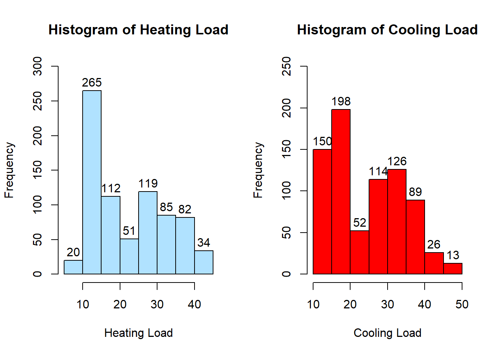
Vẽ biểu đồ hộp thể hiện phân phối của Y1, Y2 theo phân loại của biến X5. Dùng lệnh vẽ Boxplot
par(mfrow = c(1, 2))
boxplot(Y1~X5,heat_data,xlab ="Overall Height",ylab="Heating Load",main="Heating Load and Overall Height",col="red") #Phân phối của Y1 theo phân loại biến X5
boxplot(Y2~X5,heat_data,xlab ="Overall Height",ylab="Cooling Load",main="Cooling Load and Overall Height",col="lightskyblue1") #Phân phối của Y2 theo phân loại biến X5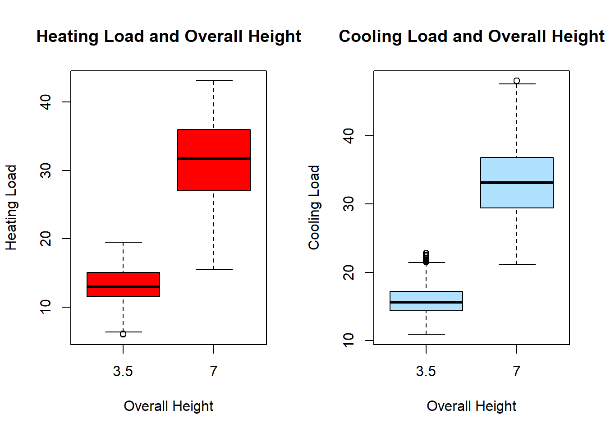
Nhận xét: Dựa trên biểu đồ, ta có thể thấy mức độ thu nhiệt và toả nhiệt của các ngôi nhà có chiều cao 7m cao hơn so với có chiều cao 3.5m. ta có thể dự đoán chiều cao tổng thể là một nhân tố ảnh hưởng đến mức độ thu nhiệt hay toả nhiệt.
Dùng lệnh Boxplot để vẽ biểu đồ hộp thể hiện phân phối của Y1, Y2 theo phân loại của biến X6
par(mfrow = c(1, 2))
boxplot(Y1~X6,heat_data,xlab ="Orientation",ylab="Heating Load",main="Heating Load and Orientation",col="lightblue") #Phan phoi cua Y1 theo phan loai bien X6
boxplot(Y2~X6,heat_data,xlab ="Orientation",ylab="Cooling Load",main="Cooling Load and Orientation",col="pink") #Phan phoi cua Y2 theo phan loai bien X6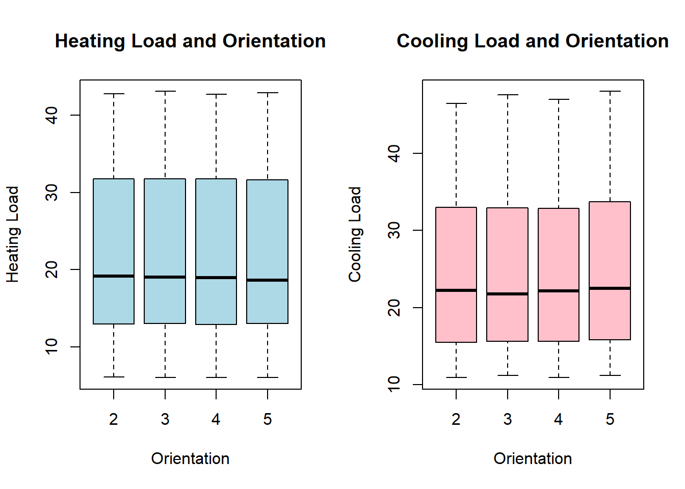
Nhận xét: Dựa trên biểu đồ, ta có thể thấy các ngôi nhà có định hướng khác nhau đều mức độ thu nhiệt và toả nhiệt tương đối như nhau. Ta có thể dự đoán định hướng là một nhân tố không ảnh hưởng đến mức độ thu nhiệt hay toả nhiệt.
Dùng lệnh Boxplot để vẽ biểu đồ hộp thể hiện phân phối của Y1, Y2 theo phân loại của biến X7
par(mfrow = c(1, 2))
boxplot(Y1~X7,heat_data,xlab ="Glazing Area",ylab="Heating Load",main="Heating Load and Glazing Area",col="salmon1") #Phan phoi cua Y1 theo phan loai bien X7
boxplot(Y2~X7,heat_data,xlab ="Glazing Area",ylab="Cooling Load",main="Heating Load and Glazing Area",col="lightskyblue1") #Phan phoi cua Y2 theo phan loai bien X6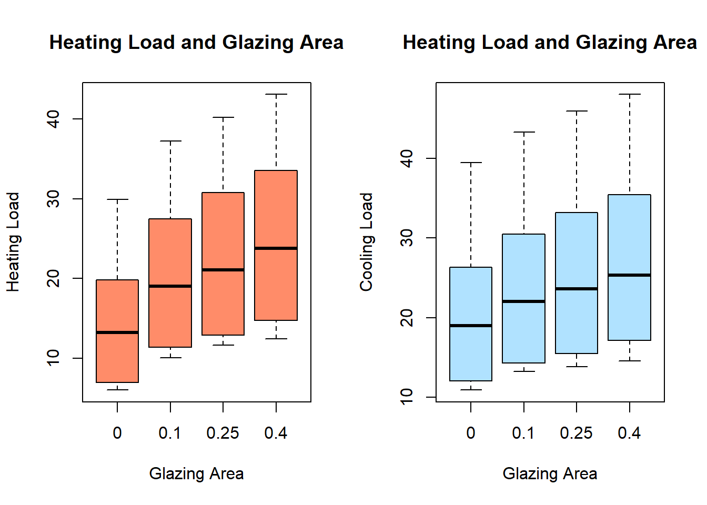
Nhận xét: Dựa trên biểu đồ, ta có thể thấy các ngôi nhà có diện tích kính càng cao (so với diện tích sàn) thì phân bố mức độ thu nhiệt và toả nhiệt càng cao. Ta có thể dự đoán diện tích kính là một nhân tố ảnh hưởng đến mức độ thu nhiệt hay toả nhiệt.
Dùng lệnh Boxplot để vẽ biểu đồ hộp thể hiện phân phối của Y1, Y2 theo phân loại của biến X8
par(mfrow = c(1, 2))
boxplot(Y1~X8,heat_data,xlab ="Glazing Area Distribution",ylab="Heating Load",main="Heating Load and GA Distribution",col="green",cex.main=1.1) #Phan phoi cua Y1 theo phan loai bien X8
boxplot(Y2~X8,heat_data,xlab ="Glazing Area Distribution",ylab="Cooling Load",main="Cooling Load and GA Distribution", col="orange",cex.main=1.1) #Phan phoi cua Y2 theo phan loai bien X7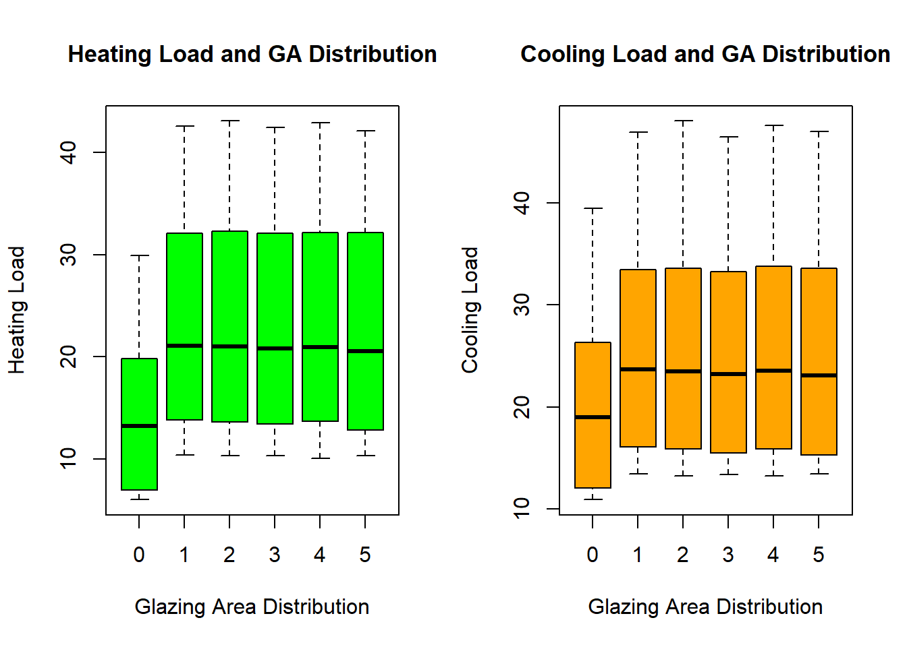
Nhận xét: Dựa trên biểu đồ, các ngôi nhà có phân bố khu vực dán kính đều có phân bố mức độ thu nhiệt và toả nhiệt tương đối như nhau, riêng trường hợp những ngôi nhà không dán kính thì phân bố mức độ thu nhiệt và toả nhiệt thấp hơn. Ta có thể đoán rằng việc dán kính hay không có thể ảnh hưởng đến phân bố mức độ thu nhiệt và toả nhiệt, tuy nhiên việc phân bố khu vực dán kính có thể không ảnh hưởng đến phân bố mức độ thu nhiệt và toả nhiệt.
Vẽ biểu đồ phân phối của Y1, Y2 theo biến X1
par(mfrow = c(1, 2))
plot(heat_data$X1,heat_data$Y1,col="orange",xlab="Relative Compactness",ylab="Heating Load",main="Heating Load and Compactness", pch = 18) #Vẽ biểu đồ phân tán thể hiện phân phối của 'Y1' theo biến 'X1'
plot(heat_data$X1,heat_data$Y2,col="blue",xlab="Relative Compactness",ylab="Cooling Load",main="Cooling Load and Compactness", pch = 18) #Vẽ biểu đồ phân tán thể hiện phân phối của 'Y2' theo biến 'X1'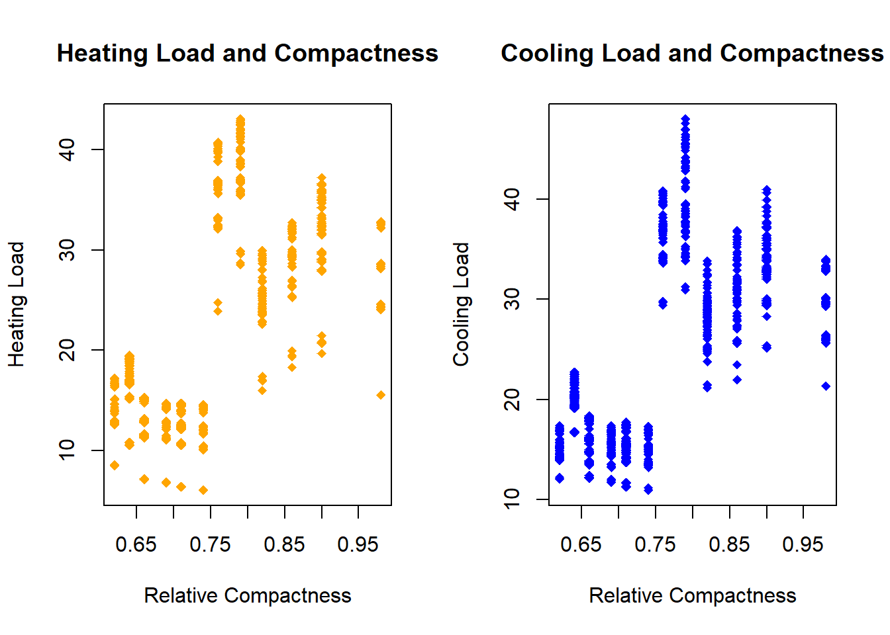
Vẽ biểu đồ phân phối của Y1, Y2 theo biến X2
par(mfrow = c(1, 2))
plot(heat_data$X2,heat_data$Y1,col="orange",xlab="Surface Area",ylab="Heating Load",main="Heating Load and Surface Area", pch = 18)
plot(heat_data$X2,heat_data$Y2,col="blue",xlab="Surface Area",ylab="Cooling Load",main="Cooling Load and Surface Area", pch = 18) 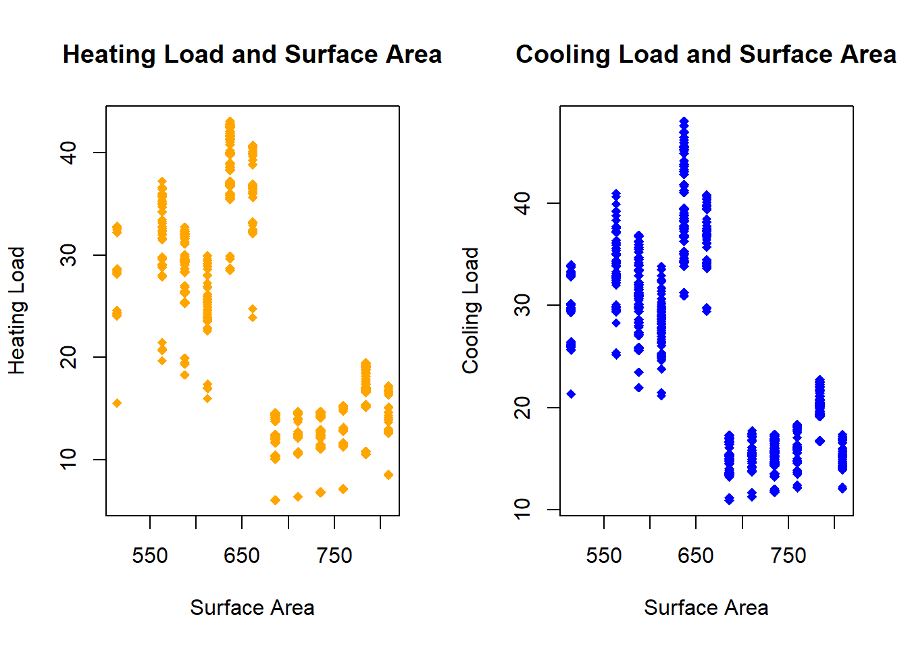
Vẽ biểu đồ phân phối của Y1, Y2 theo biến X3
par(mfrow = c(1, 2))
plot(heat_data$X3,heat_data$Y1,col="orange",xlab="Wall Area",ylab="Heating Load",main="Heating Load and Wall Area", pch = 18)
plot(heat_data$X3,heat_data$Y2,col="blue",xlab="Wall Area",ylab="Cooling Load",main="Cooling Load and Wall Area", pch = 18) 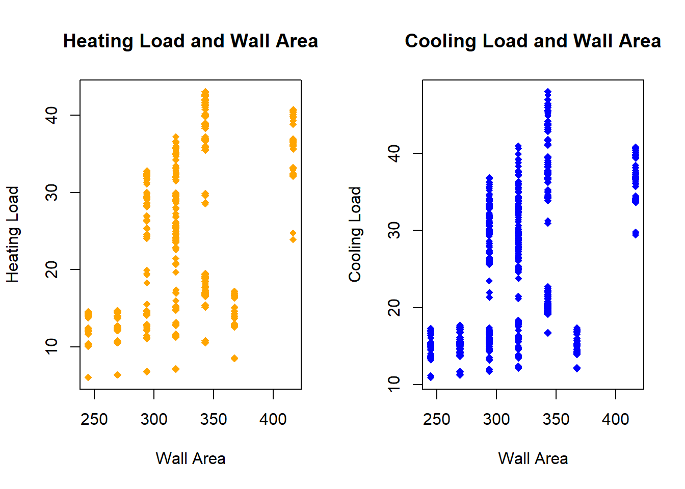
Vẽ biểu đồ phân phối của Y1, Y2 theo biến X4
par(mfrow = c(1, 2))
plot(heat_data$X4,heat_data$Y1,col="orange",xlab="Roof Area",ylab="Heating Load",main="Heating Load and Roof Area", pch = 18)
plot(heat_data$X4,heat_data$Y2,col="blue",xlab="Roof Area",ylab="Cooling Load",main="Cooling Load and Roof Area", pch = 18) 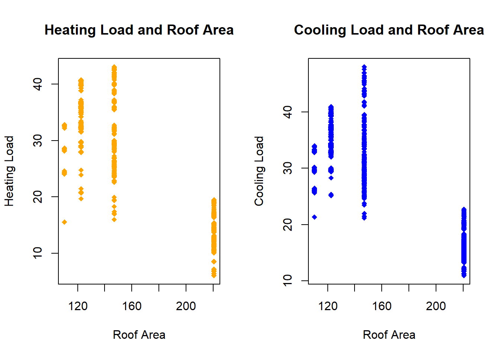
Nhận xét: Từ các đồ thị phân tán, ta có thể nhận xét các biến X1, X2, X3, X4 ta nhận thấy chưa thực sự rõ về mối quan hệ tuyến tính với biến Y1 (hay Y2). Do đó, ta cần xây dựng mô hình hồi quy để đánh giá rõ hơn mối quan hệ giữa các biến lên Y1 (hay Y2).
4. Mô hình hồi quy tuyến tính:
Mô hình hồi quy với với biến phụ thuộc là Y1, và giả sử các biến độc lập là: X1, X2, X3, X4, X5, X6, X7, X8.
Mô hình được biểu diễn như sau:
\(Y1 = \alpha_0 + \alpha_1.X1 + \alpha_2.X2 + ... + \alpha_7.{X7} + \alpha_8.{X8}\).
Sử dụng lệnh lm để xây dựng mô hình hồi quy tuyến tính và summary để tóm tắt kết quả:
model_1 = lm(Y1~X1+X2+X3+X4+X5+X6+X7+X8,heat_data) #Mo hinh hoi quy tuyen tinh
summary(model_1) #Tom tat ket qua ##
## Call:
## lm(formula = Y1 ~ X1 + X2 + X3 + X4 + X5 + X6 + X7 + X8, data = heat_data)
##
## Residuals:
## Min 1Q Median 3Q Max
## -9.8965 -1.3196 -0.0252 1.3532 7.7052
##
## Coefficients: (1 not defined because of singularities)
## Estimate Std. Error t value Pr(>|t|)
## (Intercept) 84.013418 19.033613 4.414 1.16e-05 ***
## X1 -64.773432 10.289448 -6.295 5.19e-10 ***
## X2 -0.087289 0.017075 -5.112 4.04e-07 ***
## X3 0.060813 0.006648 9.148 < 2e-16 ***
## X4 NA NA NA NA
## X5 4.169954 0.337990 12.338 < 2e-16 ***
## X6 -0.023330 0.094705 -0.246 0.80548
## X7 19.932736 0.813986 24.488 < 2e-16 ***
## X8 0.203777 0.069918 2.915 0.00367 **
## ---
## Signif. codes: 0 '***' 0.001 '**' 0.01 '*' 0.05 '.' 0.1 ' ' 1
##
## Residual standard error: 2.934 on 760 degrees of freedom
## Multiple R-squared: 0.9162, Adjusted R-squared: 0.9154
## F-statistic: 1187 on 7 and 760 DF, p-value: < 2.2e-16Nhận xét
Đối với biến X4 ta không tìm được hệ số hồi quy và tính được các thông số liên quan, có thể giải thích X4 là một biến phụ thuộc theo các biến còn lại (diện tích mái nhà có thể phụ thuộc vào diện tích tường hoặc diện tích bề mặt,…). Do vậy ta sẽ loại bỏ X4 ra khỏi mô hình hồi quy.
Mô hình hồi quy tuyến tính: \(\textit{Y1} = 84.013418 - 64.773432.\textit{X1} - 0.087289.\textit{X2} + ... + 19.932736.\textit{X7} + 0.203777.\textit{X8}\).
Ta thấy rằng p-value tương ứng với thống kê F bé hơn 2.2e−16, có ý nghĩa rất cao. Điều này chỉ ra rằng, ít nhất một biến dự báo trong mô hình có ý nghĩa giải thích rất cao cho biến mức độ thu nhiệt Y1.
Ta cũng nhận thấy rằng p-value của bài toán kiểm định giả thuyết H0: Hệ số ứng với X6 không có ý nghĩa thống kê \((\alpha_6 = 0)\) bằng 0.80548 cho thấy rằng biến X6 này không có ý nghĩa đối với mô hình hồi quy ta vừa xây dựng, do đó ta có thể loại bỏ biến X6 ra khỏi mô hình hồi quy.
Xây dựng lại mô hình hồi quy tuyến tính với biến phụ thuộc là Y1, và các biến độc lập lúc này là: X1, X2, X3, X5, X7, X8.
model_2 = lm(Y1~X1+X2+X3+X5+X7+X8,heat_data) #Xay dung lai mo hinh hoi quy tuyen tinh
summary(model_2) #Tom tat ket qua##
## Call:
## lm(formula = Y1 ~ X1 + X2 + X3 + X5 + X7 + X8, data = heat_data)
##
## Residuals:
## Min 1Q Median 3Q Max
## -9.9315 -1.3189 -0.0262 1.3587 7.7169
##
## Coefficients:
## Estimate Std. Error t value Pr(>|t|)
## (Intercept) 83.931762 19.018978 4.413 1.17e-05 ***
## X1 -64.773432 10.283096 -6.299 5.06e-10 ***
## X2 -0.087289 0.017065 -5.115 3.97e-07 ***
## X3 0.060813 0.006644 9.153 < 2e-16 ***
## X5 4.169954 0.337781 12.345 < 2e-16 ***
## X7 19.932736 0.813484 24.503 < 2e-16 ***
## X8 0.203777 0.069875 2.916 0.00365 **
## ---
## Signif. codes: 0 '***' 0.001 '**' 0.01 '*' 0.05 '.' 0.1 ' ' 1
##
## Residual standard error: 2.933 on 761 degrees of freedom
## Multiple R-squared: 0.9162, Adjusted R-squared: 0.9155
## F-statistic: 1387 on 6 and 761 DF, p-value: < 2.2e-16Nhận xét:
Mô hình hồi quy tuyến tính về sự ảnh hưởng các nhân tố (X1, X2, X3, X5, X7, X8) lên Y1: \(\textit{Y1} = 83.931762 - 64.773432.\textit{X1} - 0.087289.\textit{X2} + ... + 19.932736.\textit{X7} + 0.203777.\textit{X8}\).
Hệ số xác định hiệu chỉnh (Adjusted R-squared): \(R^2\) hiệu chỉnh = 0.9155 nghĩa là 91.55% sự biến thiên trong mức độ thu nhiệt Y1 được giải thích bởi các biến độc lập (X1, X2, X3, X5, X7, X8).
Để xét ảnh hưởng cụ thể của từng biến độc lập, ta xét các hệ số hồi quy \((\alpha_i)\) và p-value tương ứng. Ta thấy rằng p-value tương ứng với các biến X3, X5, X7 đều bé hơn 2e−16, điều này nói lên rằng ảnh hưởng của ba biến có ý nghĩa rất cao lên biến mức độ thu nhiệt Y1. Mặt khác, hệ số hồi quy của một biến độc lập cũng có thể được xem như ảnh hưởng trung bình lên biến phụ thuộc Y1 khi tăng một đơn vị của biến dự báo đó, giả sử rằng các biến dự báo khác không đổi. Cụ thể, hệ số hồi quy ứng với biến X1 \(\alpha_1 = - 64.773432\) thì với mỗi khi độ nhỏ gọn tăng 1 đơn vị, ta có thể kỳ vọng mức độ thu nhiệt của ngồi nhà sẽ giảm đi 64.773432 đơn vị về mặt trung bình (giả sử rằng các biến độc lập khác không thay đổi). Hệ số hồi quy ứng với biến X2 \(\alpha_2 = - 0.087289\) thì mỗi khi tăng 1 \(m^2\) diện tích bề mặt, ta có thể kỳ vọng rằng mức độ thu nhiệt sẽ giảm đi 0.087289 đơn vị về mặt trung bình (giả sử rằng các biến độc lập khác không thay đổi). Tương tự đối với các biến còn lại.
Kiểm tra các giả định của mô hình. Nhắc lại các giả định của mô hình hồi quy:
Tính tuyến tính của dữ liệu: mối quan hệ giữa biến dự báo X và biến phụ thuộc Y được giả sử là tuyến tính.
Sai số có phân phối chuẩn.
Các sai số \(\epsilon_1,...,\epsilon_n\) độc lập với nhau.
Phương sai của các sai số là hằng số: \(\epsilon_n \sim N(0,\sigma^2)\)
Ta thực hiện phân tích thặng dư để kiểm tra các giả định của mô hình:
plot(model_2) #Ve bieu do phan tich thang du kiem tra gia dinh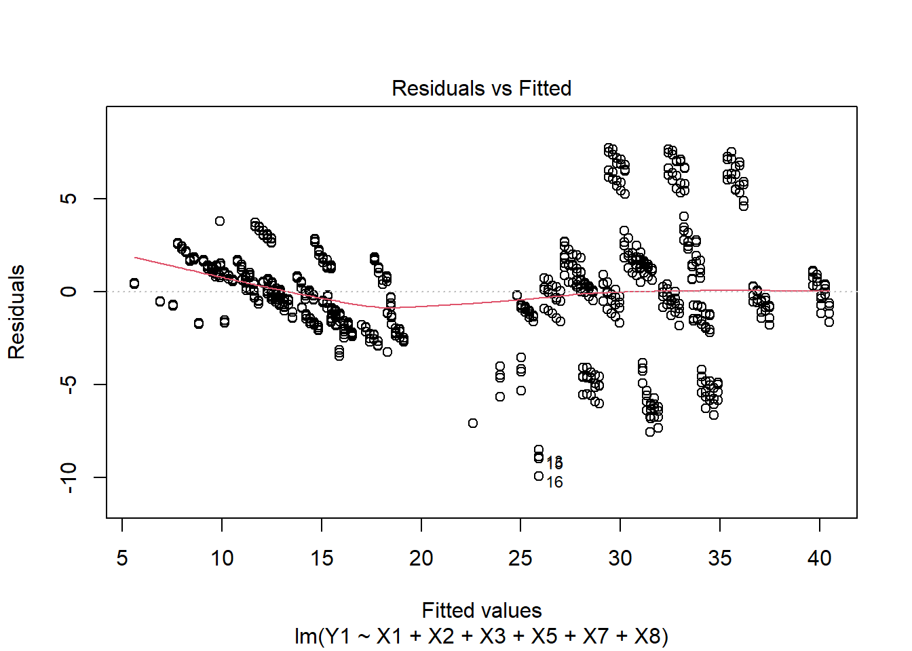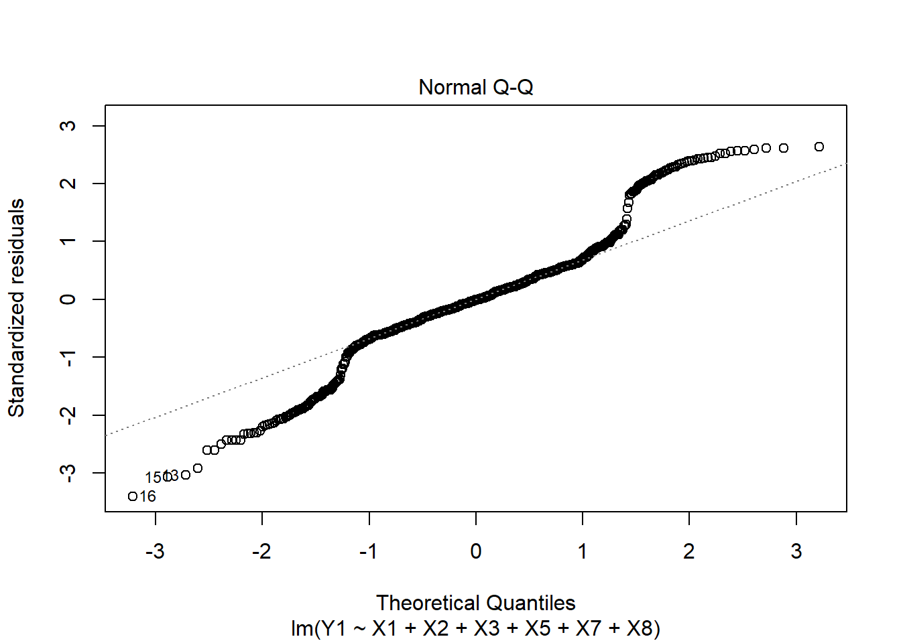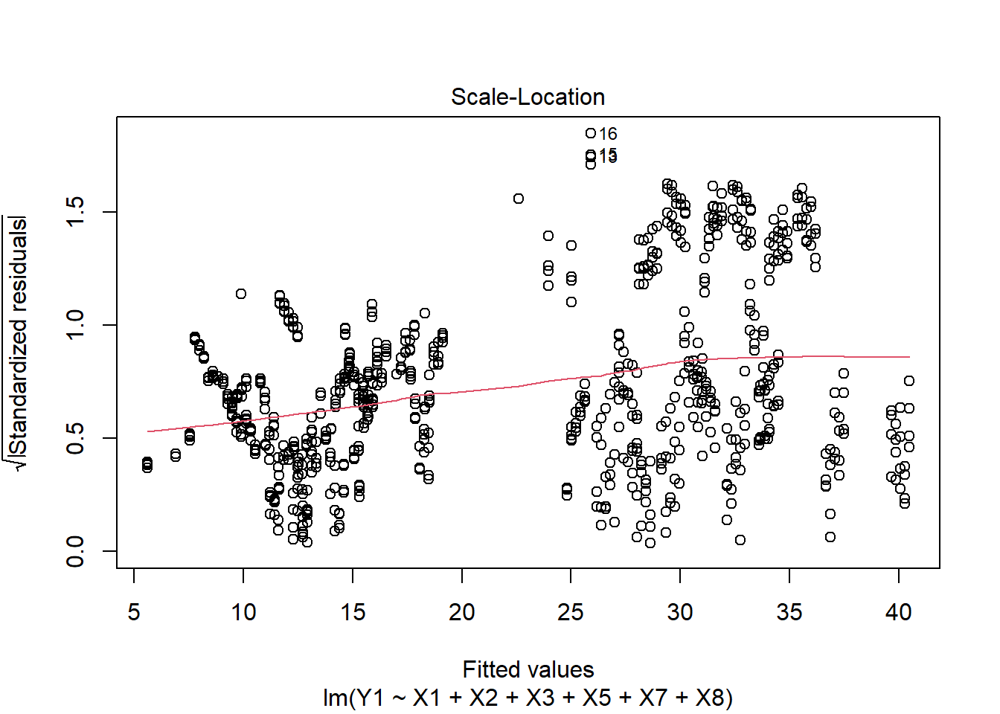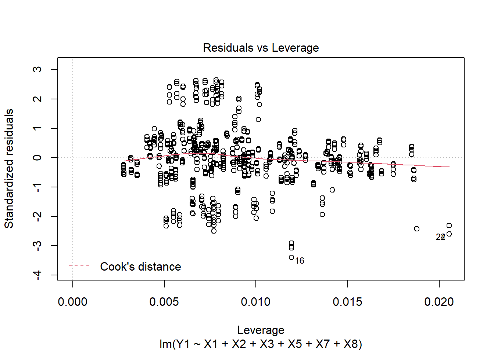
Đồ thị thứ 1 (Residuals vs Fitted) vẽ các giá trị dự báo với các giá trị thặng dư (sai số) tương ứng, dùng để kiểm tra tính tuyến tính của dữ liệu (giả định 1) và tính đồng nhất của các phương sai sai số (giả định 3). Nếu như giả định về tính tuyến tính của dữ liệu KHÔNG thỏa, ta sẽ quan sát thấy rằng các điểm thặng dư (residuals) trên đồ thị sẽ phân bố theo một hình mẫu (pattern) đặc trưng nào đó (ví dụ parabol). Nếu đường màu đỏ trên đồ thị phân tán là đường thẳng nằm ngang mà không phải là đường cong, thì giả định tính tuyến tính của dữ liệu được thỏa mãn. Để kiểm tra giả định thứ 3 (phương sai đồng nhất) thì các điểm thặng dự phải phân tán đều nhau xung quanh đường thẳng y=0
Đồ thị thứ 2 (Normal Q-Q) cho phép kiểm tra giả định về phân phối chuẩn của các sai số. Nếu các điểm thặng dư nằm trên cùng 1 đường thẳng thì điều kiện về phân phối chuẩn được thỏa.
Đồ thị thứ 3 (Scale - Location) vẽ căn bậc hai của các giá trị thặng dư được chuẩn hóa với các giá trị dự báo, được dùng để kiểm tra giả định thứ 3 (phương sai của các sai số là hằng số). Nếu như đường màu đỏ trên đồ thị là đường thẳng nằm ngang và các điểm thặng dư phân tán đều xung quanh đường thẳng này thì giả định thứ 3 được thỏa. Nếu như đường màu đỏ có độ dốc (hoặc cong) hoặc các điểm thặng dư phân tán không đều xung quanh đường thẳng này, thì giả định thứ 3 bị vi phạm.
Đồ thị thứ 4 (Residuals vs Leverage) cho phép xác định những điểm có ảnh hưởng cao (influential observations), nếu chúng có hiện diện trong bộ dữ liệu. Những điểm có ảnh hưởng cao này có thể là các điểm outliers, là những điểm có thể gây nhiều ảnh hưởng nhất khi phân tích dữ liệu. Nếu như ta quan sát thấy một đường thẳng màu đỏ đứt nét (Cook’s distance), và có một số điểm vượt qua đường thẳng khoảng cách này, nghĩa là các điểm đó là các điểm có ảnh hưởng cao. Nếu như ta chỉ quan sát thấy đường thẳng khoảng cách Cook ở góc của đồ thị và không có điểm nào vượt qua nó, nghĩa không có điểm nào thực sự có ảnh hưởng cao.
Nhận xét:
Đồ thị Normal Q-Q cho thấy giả định sai số có phân phối chuẩn chưa thực sự thỏa mãn.
Đồ thị thứ 1 (Residuals vs Fitted) cho thấy giả định về tính tuyến tính của dữ liệu hơi bị vi phạm, ta có thể thấy rằng sự vi phạm này bởi vì mối quan hệ giữa Y1 và các biến còn lại là phi tuyến tính.
Đồ thị thứ 1 và thứ 3 (Scale - Location) cho ta thấy rằng giả định về tính đồng nhất của phương sai cũng hơi bị vi phạm. Tuy nhiên, ta cũng thấy này sự vi phạm này tương đối nhỏ và có thể chấp nhận được.
Đồ thị thứ tư chỉ ra có các quan trắc thứ 16, 22 và 24 có thể là các điểm có ảnh hưởng cao trong bộ dữ liệu.
Tuy nhiên ta cũng quan sát thấy rằng các điểm này chưa vượt qua đường thẳng khoảng cách Cook (đường thẳng đứt nét màu đỏ Cook’s distance). Do vậy, các điểm này chưa thực sự là các điểm có ảnh hưởng cao trong bộ dữ liệu. Do đó ta không cần phải loại bỏ chúng khi phân tích
5. So sánh trung bình mức thu nhiệt và toả nhiệt của các ngôi nhà. Sử dụng lệnh apply, mean để tính trung bình Y1 và Y2:
apply(heat_data[,c("Y1","Y2")],2,mean) ## Y1 Y2
## 22.30720 24.58776Ta sử dụng lệnh boxplot để so sánh trung bình Y1 và Y2:
par(mfrow = c(1, 2))
boxplot(heat_data$Y1,ylab="Heat Load",main="Boxplot of Heat Load",col="red") #vẽ biểu đồ phân phối của mức độ thu nhiệt của các ngôi nhà
boxplot(heat_data$Y2,ylab="Cool Load",main="Boxplot of Cool Load",col="green") #vẽ biểu đồ phân phối của mức độ toả nhiệt của các ngôi nhà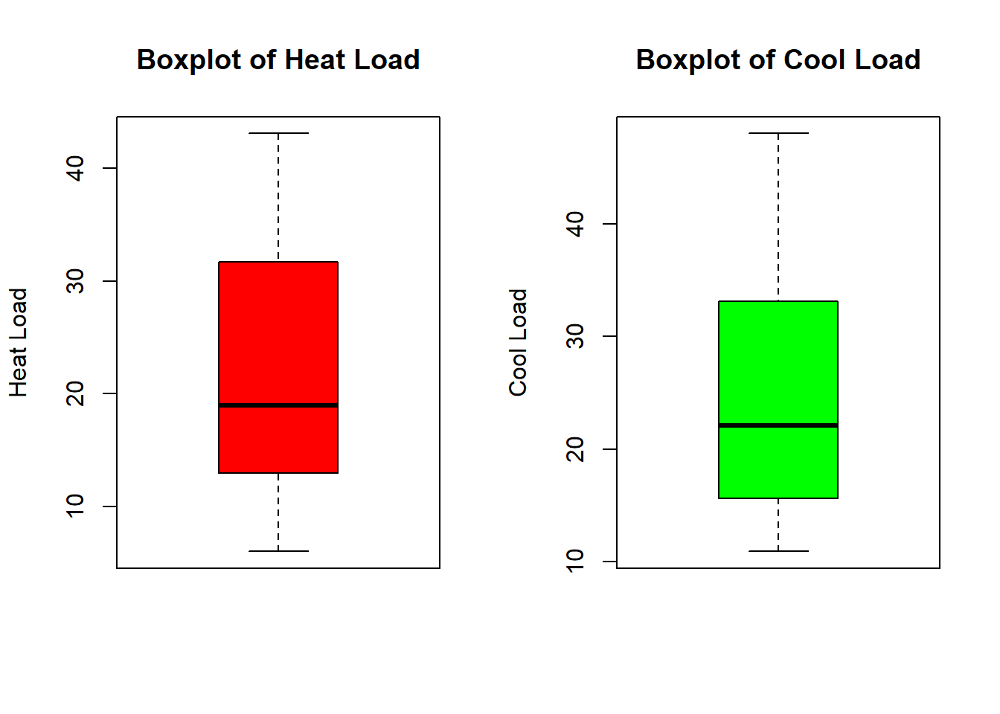
Nhận xét: Dựa trên trung bình mẫu và biểu đồ boxplot, ta nhận thấy mức độ thu nhiệt trung bình có xu hướng thấp hơn mức độ toả nhiệt trung bình, tuy nhiên để đánh giá lại điều đó là ngẫu nhiên hay nó thực sự mức độ thu nhiệt trung bình có xu hướng thấp hơn toả nhiệt, ta cần thực hiện kiểm định trung bình so sánh mức độ thu nhiệt và toả nhiệt giữa các ngôi nhà.
Ta sử dụng lệnh t-test để thực hiện so sánh trung bình mức thu nhiệt và toả nhiệt của các ngôi nhà:
t.test(heat_data$Y1,heat_data$Y2, paired = T) ##
## Paired t-test
##
## data: heat_data$Y1 and heat_data$Y2
## t = -28.358, df = 767, p-value < 2.2e-16
## alternative hypothesis: true difference in means is not equal to 0
## 95 percent confidence interval:
## -2.438434 -2.122696
## sample estimates:
## mean of the differences
## -2.280565##So sánh trung bình mức thu nhiệt và toả nhiệt của các ngôi nhàNhận xét:
Giả thuyết H0: \(\mu_1 = \mu_2\) hay \(\mu_D = 0\): Mức độ thu nhiệt trung bình và mức độ toả nhiệt trung bình bằng nhau (không có sự khác biệt giữa mức độ thu nhiệt trung bình và toả nhiệt trung bình của các ngôi nhà)
Giả thuyết H1: \(\mu_1 < \mu_2\) hay \(\mu_D < 0\): Mức độ thu nhiệt trung bình thấp hơn mức độ toả nhiệt trung bình.
Dựa trên kết quả, ta nhận đọc được các kết quả:
Thống kê kiểm định: t = -28.358, bậc tự do 767 và p-value < 2.2e-16, rất bé nên ta có đủ bằng chứng mạnh để bác bỏ H0. Ta kết luận là mức độ thu nhiệt trung bình thấp hơn so với mức độ toả nhiệt trung bình của các ngôi nhà.
Sự khác biệt giữa trung bình mức độ thu nhiệt và mức độ tỏa nhiệt là -2.280565 và khoảng tin cậy 95% cho sự khác biệt giữa trung bình mức độ thu nhiệt và mức độ tỏa nhiệt: (-2.438434; -2.122696).